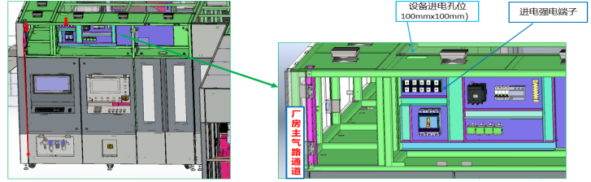
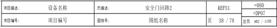
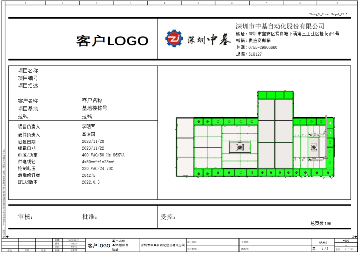
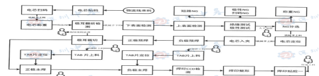
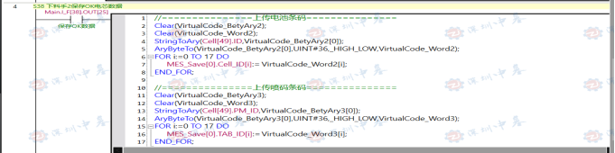
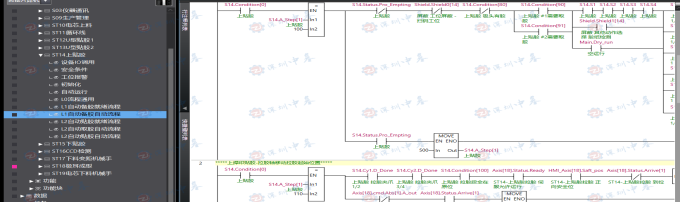

目录
第一章 电气设计总则
1.1 目的和范围
本规范的目的是为了规范电气设计的内容和要求，确保电气系统的安全性、可靠性、经济性和合理性。本规范适用于深圳中基自动化股份有限公司（以下简称深圳中基）及其子公司制造的自动化设备，并以此作为电气设计的参考及审核依据。本规范由电气部根据常用的国际和国家参考标准以及过往设计经验制定，并非唯一设计标准。本规范涵盖了电气清单设计规范、电路图设计规范、PLC程序设计规范、触摸屏设计规范、上位机设计规范、电气设备调试规范以及电气资料归档等方面的要求。所有设备的电气设计若无特殊指定技术要求，均需符合本技术规范要求。如有超出本技术要求范围的内容，可与各电气部门负责人进行讨论。
1.2 术语和定义
本规范中使用的术语和定义参考了国际电工委员会（IEC）的相关标准，以及国家电气标准和行业惯例。
1.3 参考标准
电气工程师的职责是在遵守规则、规范和标准的前提下，通过规范设计实现设备功能，满足客户需求。在过程中，包括电气工程设计规范、电气部件标准和测试方法等。这些标准文件提供了指导和依据，帮助工程师更好地理解和应用电气工程知识，从而更好地完成工作。
1.3.1 电气机械设备通用标准
(1)、GB/T 5226.1-2019（IEC60204-1:2016）电气设备和控制装置 第1部分：一般要求
该标准规定电气设备和控制装置的一般要求，包括安全性、可靠性、操作性和保护等，以确保正常运行和操作安全。适用于各种类型的设备和装置，包括机械设备、工业生产线、自动化系统等。标准还规定电气安全、电磁兼容性、防护等方面的要求，以及电气设备和控制装置的设计和安装要求，包括电气连接、接地、绝缘等。
(2)、GB/T 4208-2017（IEC60529：2013）机械安全 急停 设计原则
该标准涉及机械设备急停装置的设计原则、选型和安装要求，以确保在紧急情况下能迅速停止或减速机械设备，保护操作人员和设备不受伤害和损坏。设计原则包括识别风险、灵敏度、可靠性、易操作性、避免误动作等要求。
(3)、GB 18209.1-2010（IEC61310:2007）机械产品的功能安全 第1部分：一般原则
该标准规定机械产品的功能安全原则，确保产品在预期条件下安全运行，防止对人员、财产或环境的危害。规定机械产品功能安全的一般原则，包括风险评估、安全控制系统、安全可靠性等方面的要求，机械产品功能安全的设计和制造要求，包括安全可靠性、安全控制系统的设计和验证等方面的要求。
(4)、GB/T 4208-2017（IEC60529：2013）外壳防护等级(IP代码)
该标准为电气设备外壳的防护等级，即IP代码，定义了不同的IP等级，测试方法、设备分类和标记的要求，用户可以了解电气设备的防护等级，从而判断其适用于不同的环境和使用条件。
(5)、GB/18209.1-2010（IEC61310:2007）工业自动化系统—安全相关部件的功能安全—第1部分:术语、定义、符号及表示法。
该标准规定了工业自动化系统中安全相关部件的功能安全方面的术语、定义、符号和表示法。它提供了工业自动化系统中与功能安全相关的基本概念和术语的统一定义，以便在设计、开发和评估安全相关部件时使用。用户可以了解工业自动化系统中与功能安全相关的术语和定义，从而确保在设计和开发过程中的一致性和互操作性。
(6)、ISO 7010-2011图形符号——安全色和安全标志
该标准规定了用于安全标志的图形符号的设计原则、颜色、形状和尺寸等要求，标准的使用可以增加人们对潜在风险和应采取的措施的认识和理解。通过统一的安全标志系统，人们能够更容易地识别和遵守相关的安全规定，从而提高工作场所和公共场所的安全性。
1.3.2 电气设计清单制图标准
(1)、GB/T 6988.1-2018（IEC61082）技术产品文件 电子文件结构 第1部分：规则和指导
该标准规定了技术产品文件中电子文件的结构、格式和命名规则，旨在提供一套统一的规范和指导，以便于技术文件的编制、交流和管理。规定了电气工程图纸和文件的编制要求，包括布局、符号使用、尺寸标注、线型和图例等方面。
(2)、GB/T 5094.2-2018（IEC81346-2:2009）工业系统、安全性与可靠性 第2部分：分类原则和应用指南
该标准规定了工业设备和系统的分类原则和应用指南，旨在提供一套统一的标准和指导，以便于工业设备和系统的标识、管理和维护。适用于各种类型的工业设备和系统，包括机械、仪表、电气设备等。它定义了设备和系统的标识原则，包括标识码的组成、表示方式和命名规则。
(3)、GB/T 4278-2018（IEC60617）图形符号—电工现场及设备上使用的电气符号
该标准规定了在电工现场和设备上使用的电气符号的图形表示方法，旨在提供一套统一的符号系统，以便于电气图纸和技术文件的编制、交流和理解。适用于各种类型的电气图纸和技术文件，包括电路图、控制图、布线图等。它定义了电气符号的形状、尺寸、表示方式和命名规则。符号涵盖了电气元件、电气设备、电气连接、传感器、控制和信号等方面的内容。
(4)、GB/T 30085-2013（IEC62491:2008）工业控制系统网络和互联 数据结构和规范
该标准规定了工业控制系统网络和互联的数据结构和规范，旨在提供一套统一的标准和指导，以便于工业控制系统的网络通信和信息交换。适用于各种类型的工业控制系统网络和互连设备，包括传感器、执行器、PLC（可编程逻辑控制器）、HMI（人机界面）、DCS（分散控制系统）等。它定义了网络通信的数据结构、协议、消息格式和命名规则。
(5)、GB/T 13534-2009设备、工业机械和产品的安全术语
该标准规定了设备、工业机械和产品的安全相关术语，旨在提供统一的术语和定义，以便在安全管理、设计、制造、使用和维护等方面进行交流和理解。适用于各种类型的设备、工业机械和产品，包括但不限于机械设备、电气设备、化学品、建筑材料等。该标准定义了与安全相关的术语，如安全、危险、风险评估、防护装置等，并提供了这些术语的清晰和一致的解释。
1.3.3 程序设计标准
(1)、IEC6113-3是PLC编程标准，定义了五种编程语言：梯形图（LD）、功能块图（FBD）、序列功能图（SFC）、结构化文本（ST）和指令列表（IL）。标准规定PLC编程的通用原则和最佳实践，如变量声明和命名规范、程序结构和模块化设计、数据类型和操作符的使用、错误处理和异常处理。
(2)、ISA88是ISO的制造过程控制标准，也称为批处理控制标准，该标准提供了一种通用的方法来设计、实现和操作批处理过程，定义了批处理控制系统中各个模块和功能，并提供了一套通用的术语和符号体系。
(3)、PLCopen总结和开发了各种标准和规范，如PLC编程语言、PLC程序组织、PLC测试指南等，以提高PLC编程的质量和可靠性
(4)、ISO 9241-210是关于人机界面设计的标准，涵盖了工业自动化领域的界面设计。该标准提供通用的设计指导和原则，强调用户中心的设计思想，以用户需求和行为为核心。人机界面设计应具备可用性、易学性、可理解性、可控制性、灵活性、一致性、反馈性和容错性等通用原则。同时，视觉设计也是人机界面设计的重要方面，包括图形、符号、颜色、对比度、布局和字体等方面的指导。
1.4 规范细则
1.4.1电气清单设计规范：电气设计清单是列出项目所需电气设备和器材的详细清单。设计规范应包括设备型号、规格、数量、功率要求以及供货和安装要求等信息。在设计清单时，应考虑标准元器件选型、成本考量、设备工艺要求和供应商可靠性等因素。
1.4.2电路图设计规范： 电路图设计规范包括电气系统的电路布线图、接线图和控制逻辑图等。规范通常包括符号使用、线路命名、颜色编码、图纸比例和尺寸等要求，以便于工程师之间的交流和正确理解电路设计意图，减少错误和误解，并提高效率。
1.4.3 PLC程序设计规范：PLC程序设计规范包括基本原则、结构规范、标准库文件建立和样例示范。基本原则强调模块化设计、结构化编程、强制性标准化和可重用性。结构规范涉及语言、命名、设备和程序框架规范。标准库文件提供完整的库文件系统，提高编程效率并保证一致性。样例展示实践应用，可作为编写PLC程序的参考和指导。
1.4.4触摸屏设计规范：触摸屏设计规范包括界面布局、页面地址和使用样例模版。
1.4.5上位机程序规范：上位机平台是指用于监控、控制和管理设备数据以及生成数据的计算机软件平台。上位机平台规范包括了功能需求分析、界面设计、数据交互协议、报警和日志记录等方面的要求。规范化的设计有助于确保上位机平台的稳定性和可靠性。此外，上位机平台规范还应考虑数据安全和数据追溯等重要问题，以防止数据丢失和保证数据追溯准确性、完善性。
1.4.6设备调试规范：设备调试是将电气系统组装、安装完毕后进行的测试和调整过程。调试规范包括了调试步骤、问题处理、调试记录和验收等方面的要求。遵循规范可以确保设备调试的高效进行，并减少故障和问题的发生。
1.4.7电气资料归档及维护：资料归档和维护是为了方便后续的运维和维护工作。规范要求将相关的电气设计文档、图纸、程序和技术资料进行整理、归档并进行备份。制定合适的文件命名和存储结构，以保证资料的完整性和可检索性。
1.5 常用要求
1.5.1 安全要求
(1) 设备的急停按钮是基本的安全措施，单机设备的急停按钮直线间距不得超过3米，并且急停按钮的接线必须进行双冗余处理。
(2) 安全门开关分为两种类型：不带锁定的门开关和带锁定功能的门开关。不带锁定的安全门输出信号应为两路设计：一路输出至安全继电器用于安全控制，另一路输出至PLC以监控安全门的状态。而对于带锁定功能的门开关，除上述两路输出外，还应增加一路门锁定监控输出和控制锁定的输入信号。
(3) 在存在安全风险的原材料或加工件上下料工位，应配备安全门或安全光栅，并安装操作按钮（具备请求和复位功能以及指示灯），以实现在上下料过程中的人员安全保护。
(4) 确认危险源的危害等级，制定相应的防护措施（如安全门开关、电磁门锁、光栅、安全气源等）。
(1) 强弱电走线要分开线槽走线，尽量避免交叉重叠。
(2) 按钮开关齐全，在辅料上下料位置，都应有相应的手动操作按钮和紧急停止按钮。
(3) 管路内部穿线必须保留10％以上备用线。不足1根的至少要保留1根备用线，并标有备用线号。
(4) 邻近元件超过三个的位置，要就近采用分线盒布线，不得长距离分散走线。
(5) 垂直运行机构或者水平运行需要快速停止或者高惯量的电机控制器，要配置制动电阻。
(6) 根据用电设备不同、供电区域不同用设计多个独立电源。
(7) 对接外部设备、仪器等进行IO控制时，必须设计信号隔离。响应速度要求10ms以内的采用光耦，其他场合采用继电器。
(8) 物料抓取转运过程中，存在掉落风险或是因为物料堆叠导致干涉撞机工位，必须设计传感器防呆。
(10) 当设备中的生产物料为带电电池或存在其他火灾隐患时，必须设计烟感传感器，设置相应的报警机制，并根据甲方需求预留接入消防系统的接口。
(11) 提升机设计时重点考虑人员安全、设备安全，进、出料设计保护光电，超过两层提升机，需要单独设计急停、复位、上、下按钮。
(1) 在机械上相互耦合的机械传动点和时序耦合应被归类为同一工位，例如龙门架和UVY平台。
(2) 频繁更改或选配的模块应单独设立工位，不影响编程效率的前提下，应尽量减少工位的划分。
(3) 对于模块内存在多处并行运行部件，应设置单独程序步序。
(4) 在任何位置，按停止键设备停止后，都能用手动操作恢复到初始状态且不损坏产品，并继续自动运行。
(5) 设备急停或紧急类停止，必须进行复位报警，才能进行手动操作和自动操作。
(6) 设备安全类屏蔽，需要提示信息，并记录操作日志。
(7) 程序要有注释，变量及中间变量必须有描述，方便别人阅读或以后查阅。
1.6 规范实施
深圳中基为了确保电气设计工作标准化的有效实施，特此制定了详尽的电气设计规范文件，明确了本公司电气设计规范的内容及适用范围，并对适用项目类型和范围进行了规范。同时对内部电气设计人员进行相关规范的培训，确保电气全体员工理解和掌握电气设计规范的内容和要求。各部门经理通过会议、培训、一对一等形式加强内部沟通，与相关人员充分沟通电气设计规范的重要性和实施细节。实施过程中，各组经理或安排专人负责监督和检查电气设计规范的执行情况，定期对电气设计文件、图纸和程序进行抽查和审核，以确保符合电气设计规范的要求。针对实际项目中遇到的问题和不符合规范的情况，及时进行整改和改进，并形成经验教训供后续项目参考。标准部门会定期评估电气设计规范的实施效果和实际应用情况，发现问题并及时完善和修订规范文件。对于员工提出的改进建议，标准部门建立了反馈机制，以促进电气设计规范的持续改进和优化。
第二章电气清单设计规范
2.1. 元器件选型准则
所有电气部件的选择必须以深圳中基技术库中所提供的技术数据为基础。与深圳中基合作的第三方设备商，由所对应的电气部门提供《电气优选件汇总表》，并提供技术支持。所有选择的部件必须根据客户技术协议要求，并满足UL/CUL/CE/3C等认证，特别是安全控制系统部件必须能够满足客户最低安全要求。
1.1普遍性原则(标准化要求)：倾向于选用那些已经被广泛使用和验证过的元器件，尽量避免使用冷门或偏门的产品，以降低开发风险，具体以深圳中基物料编码表为基础。
1.2高性价比原则：在功能、性能、使用率都相接近的情况下，尽量选择价格比较好的元器件，降低成本；
1.3采购方便原则：尽量选择容易买到的、供货周期短的元器件。
1.4持续发展原则：尽量选择在可预计的时间内不会停产的元器件，禁止选用停产的器件。
1.5可替代原则：尽量选择市面上常见的元器件。
1.6向上兼容原则：尽量选择以前老产品用过的元器件。
1.7资源节约原则：尽量用上元器件的全部功能和管脚，避免浪费。
1.8消耗库存原则：尽量选用库存产品，消耗呆滞、库存物料。
1.9耐久性要求：对于需要经受频繁使用或高强度工作的元器件，选择具有良好耐久性和抗磨损性能的产品。
1.10节能要求：选择低功耗的元器件，以提高产品的能效和节能性能。
1.11防护等级要求：根据产品的使用环境和防护需求，选择具备适当防护等级的元器件，例如注液环境。
1.12操作和维护要求：选择易于操作和维护的元器件，以便用户能够方便地进行安装、调试、保养和维修。
2.2. 优选品牌表
序号 | 名称 | A类品牌 | B类品牌 | C类品牌 |
1 | PLC | 欧姆龙 | 汇川 |
|
2 | 触摸屏 | 威纶 | PROFACE |
|
3 | 显示器 | 联想 | AOC |
|
4 | 平板电脑 | 华为 | 联想 |
|
5 | 按钮 | 施耐德 | 上海二工 |
|
6 | 安全继电器 | 皮尔兹 | 欧姆龙 |
|
7 | 断路器 | 施耐德 | 正泰 | 德力西 |
8 | 中间继电器 | 施耐德 | 正泰 |
|
9 | 开关电源 | 明纬 |
|
|
10 | 变频器 | 三菱 | 汇川 | 安瑞吉 |
11 | 风扇 | 润达 | 怡合达 | 华菱 |
12 | 灯 | 欧恩 | 欧登 |
|
13 | 工控机 | 研华 |
|
|
14 | 数据线 | 绿联 |
|
|
15 | 串口服务器 | 宇泰 |
|
|
16 | 交换机 | 华为 | TPLINK |
|
17 | 光电 | 欧姆龙 | 松下 | 天工 |
18 | 光纤 | 基恩士 | 欧姆龙 | 天工 |
19 | 放大器 | 基恩士 | 欧姆龙 | 天工 |
20 | 接近开关 | 欧姆龙 |
|
|
21 | 颜色传感器 | 基恩士 | 威格勒 |
|
22 | 测厚放大器 | 基恩士 | 松下 |
|
23 | 压力传感器 | 鑫精诚 |
|
|
24 | 超声波传感器 | microsnic | 阿童木 | 邦纳 |
25 | 扫码枪 | 基恩士 | 康耐视/霍尼韦尔 | 海康 |
26 | 电子秤 | AND | 新光 |
|
27 | 测试仪 | 日置 | 艾测 | 锐捷 |
28 | 热封控制器 | ROPEX | 友科 |
|
29 | 温控表 | 欧姆龙 | 宇电 |
|
30 | 固态继电器 | 奥托尼克斯 | ESTEK |
|
31 | 探头 | 铂电 |
|
|
32 | 发热板 | 宏利 | 川泽 |
|
32 | 触摸屏按钮 | 施耐德 | 上海二工 |
|
33 | 串口服务器 | 宇泰 |
|
|
34 | 电气比例阀 | SMC |
|
|
35 | 交换机 | 华为 | TP-LINK |
|
36 | 称重 | AND | 新光 |
|
37 | 绝缘测试仪 | 日置 | 锐捷 |
|
38 | 滑环 | 默孚龙 |
|
|
|
|
|
|
|
具体型号选取表，请详见电气下单指导EXCEL表 | ||||
1）、预留15%左右的输入输出点；
2）、模块化PLC须留有两个扩展模块的位置，一体式PLC安装板中预留一个扩展模块大小位置；
3）、总线协议的网络模块需根据设备或客户需求进行添加；
4）、程序大小不得超CPU容量的80%；
5）、程序扫描周期不得超与20ms或CPU占用率不超 50%；
1）、需带有网口，支持TCP/IP；
2）、支持SD或USB导出存储功能；
3）、无特殊要求选择10寸或15.6寸屏；
1）、所有的强、弱电支路需配有独立的断路开关；
2）、不同的弱电设备需要独立的电源，不得混用，如：伺服刹车、IO、相机控制器；
3）、步进电机如使用定位控制，需选择独立48V以上的电源；
4）、加热部件需独立的漏电开关控制
5）、电源控制输出IO容量需预留30%以上
1）、在没有特殊要求情况下伺服需选用总线控制，使用总线控制时与机械设计沟通确认；
2）、转盘/皮带/位置丢失易干涉位置等需使用绝对式编码控制；
3）、存在快速制动或提升等结构时使用制动电阻；
1）、在没有特殊要求情况下步进需选用总线控制，使用总线控制时与机械设计沟通确认；
2）、无定位功能的步进控制必须选择IO控制步进；
1）、 IO可以采用分线盒或远程 IO 方式；
2）、 IO延长线采用 PUR 材质的预铸线缆；
1）、传感器线缆延长需使用 3M 接头或 M8 圆形接插件；
2）、机架外的设备需要采用重载接头与设备对接；
1）、阻值：刹车电阻的阻值决定了电机制动时的能量消耗速度。较低的阻值将导致更快的能量消耗，但也会产生更高的功耗和温升易烧坏，需根据设计要求和系统性能需求，选择适当的阻值。
在进行刹车电阻选型时，参考以下产品规格书和技术参数
汇川伺服制动电阻选型 | |||||
驱动器型号 | 最小允许阻值/Ω | 下单名称 | 下单型号 | 品牌 | 备注 |
SV660NS1R6I | 50 | 制动电阻 | 100W50Ω | 市购 | 注1：外置制动电阻接线须接在P、C端，PD之间有短接片的，先拆除短接片再接入电阻； 注2：外置制动电阻接线后需设置3个参数，H02-25=1，H02-26=电阻功率（W），H02-27=电阻阻值（Ω）； 注3：电阻选型并不固定，注意两个原则：①电阻功率可以选大，但不能太小；②电阻阻值必须大于等于“最小允许阻值”，否则会报警E922，阻值不建议超过100Ω； 注4：表格中以SV660N为例，其余型号如IS620N/P/F，SV630N/P电阻选型一致； 注5：注意黄色标注的驱动器型号，制动电阻容易下错 |
SV660NS2R8I | 45 | 制动电阻 | 200W 50Ω | 市购 | |
SV660NS5R5I | 40 | 制动电阻 | 400W 50Ω | 市购 | |
SV660NS7R6I | 20 | 再生电阻 | 500W 50Ω | 市购 | |
SV660NS012I | 15 | 制动电阻 | 800W 60Ω | 市购 | |
SV660NT3R5I | 80 | 制动电阻 | 400W 80Ω | 市购 | |
SV660NT5R4I | 60 | 制动电阻 | 800W 60Ω | 市购 | |
SV660NT8R4I | 45 | 制动电阻 | 1000W_50Ω | 市购 | |
SV660NT012I | 40 | 制动电阻 | 1500W 50Ω | 市购 | |
SV660NT017I | 35 | 制动电阻 | 2000W 50Ω | 绿联 | |
SV660NT021I | 25 | 制动电阻 | 2500W 50Ω | 市购 | |
SV660NT026I | 25 | 制动电阻 | 3000W 50Ω | 市购 | |
|
|
|
|
|
|
直线电机制动电阻选型 | |||||
直线电机功率 |
| 下单名称 | 下单型号 | 品牌 | 备注 |
200W |
| 制动电阻 | 100W50Ω | 市购 | 一般情况下，直线电机的制动电阻功率要大于电机功率的三分之一 |
400W |
| 制动电阻 | 200W 50Ω | 市购 | |
750W |
| 制动电阻 | 400W 50Ω | 市购 | |
1000W |
| 制动电阻 | 400W 50Ω | 市购 | |
1200W |
| 制动电阻 | 800W 60Ω | 市购 | |
1500W |
| 制动电阻 | 800W 60Ω | 市购 | |
1800W |
| 制动电阻 | 1000W_50Ω | 市购 | |
2000W |
| 制动电阻 | 1000W_50Ω | 市购 | |
2500W |
| 制动电阻 | 1500W 50Ω | 市购 | |
3000W |
| 制动电阻 | 2000W 50Ω | 绿联 | |
|
|
|
|
|
|
汇川变频器制动电阻选型 | |||||
变频器型号 |
| 下单名称 | 下单型号 | 品牌 | 备注 |
MD200T0.4B |
| 刹车电阻 | 300Ω 150W | 汇川 | 变频器制动电阻需根据说明书要求选型 |
MD200T0.7B |
| 刹车电阻 | 300Ω 150W | 汇川 | |
MD200T1.5B |
| 刹车电阻 | 250W 220Ω | 汇川 | |
MD200T2.2B |
| 刹车电阻 | 300W 200Ω | 汇川 | |
MD200T3.7B |
| 变频器刹车电阻 | 400W 130Ω | 汇川 | |
|
|
|
|
|
|
安吉瑞变频器制动电阻选型 | |||||
电压等级 | 变频器型号 | 下单名称 | 下单型号 | 品牌 | 备注 |
单相220V | E6-OR4G-S2 | 制动电阻 | 80W 200Ω | 市购 | 变频器制动电阻需根据说明书要求选型 |
E6-OR7G-S2 | 制动电阻 | 80W 200Ω | 市购 | ||
E6-1R5G-S2 | 制动电阻 | 260W 100Ω | 市购 | ||
E6-2R2G-S2 | 制动电阻 | 260W 70Ω | 市购 | ||
三相380V | E6-OR7G/1R5P-4 | 制动电阻 | 80W 750Ω | 市购 | |
E6-1R5G/2R2P-4 | 制动电阻 | 260W 400Ω | 市购 | ||
E6-2R2G/004P-4 | 制动电阻 | 260W 250Ω | 市购 | ||
E6-004G/5R5P-4 | 制动电阻 | 390W 150Ω | 市购 | ||
E6-5R5G/7R5P-4 | 制动电阻 | 520W 100Ω | 市购 | ||
E6-7R5G/011P-4 | 制动电阻 | 780W 75Ω | 市购 | ||
|
|
|
|
|
|
2.3.电气控制柜
1）、电气柜、控制柜、设备之间优先采用接插件连接；
2）、箱体内配电板需留有至少10%可利用规则空间；
3）、电控箱本体应符合相关的电气安全标准和规范；
4）、电控箱本体的设计应考虑防护等级、防护类别和环境条件等因素。；
1）、严格遵守各元器件的安装要求；
2）、检查产品型号、元器件型号、规格、数量等与图纸是否相符；
3）、所有元器件在维护时不应受到空间的防碍，不应有触及带电体的可能；
4）、同一型号产品应保证组装一致性；
5）、尽量保证元器件安装在电气板上，对于电柜底部和侧部尽量不安装元器件；
1）、保证一、二次线的安装距离，二次线应远离飞弧元件，二次线不得从母线间穿过；
2）、电气元件和装置的电气间隙、爬电距离应符合相关元器件的安装规定；
3）、安装 EMC 滤波器减少噪音干扰，滤波器确保与安装板有效接触；
4）、布线信号线与动力线要分开线槽走线；
5）、PLC、图像处理器等小电流智能设备与变压器、电磁接触器等装置要分区域安装
6）、在用于高速计数、脉冲发生等高频信号传输的屏蔽线缆并端头需加装磁环；
7）、对于会产生电弧的元器件加装浪涌保护装置，如机械式继电器、电磁接触器等；
8）、所有电器元件及附件均应固定安装在支架或底板上，不得悬吊或自由摆放；
9）、安装板上元器件的固定孔必须是螺纹孔，选用合适的螺丝固定；
1）、对于发热元件 (例如管形电阻、散热片等) 的安装应考虑其散热情况，安装距离应符合元件设计 规定。
2）、根据散热量需要在箱体上安装额合适的散热风扇或散热器；
3）、至少装有 1 个带有防尘罩的散热风扇，分别负责向箱体外抽风；
4）、超大功率元器件需要安装散热片；
5）、箱体内空气环境温度范围保持在 0℃--50℃;
1）、所有需要接地的元器件必须按规定牢固的接地；
2）、非特殊要求接地线统一采用黄绿线；
3）、接地端子排使用专用端子排，与普通端子排要明显区分；
4）、屏蔽线的屏蔽层应接至专用接地母排或通过连接器外壳接至机箱箱体上；
5）、安全保护接地、信号地接地均电阻应≤4Ω;
6）、防静电接地电阻一般要求≤100Ω;
7）、共用接地片（联合接地）应不大于接地电阻 1Ω;
8）、元器件接地必须直接连接到接地母排上，不允许元器件之间串联接。
9）、设备接地系统应有明确的接地点标识，以便于操作、维护和故障排除时能够快速找到接地点。
10）、设计和布局中，要考虑到接地线路的走向和布置，尽量减少交叉干扰和外部干扰
2.4.网络选型要求
原则上PLC 控制器应选择：SIEMENS S7-1500系列、Omron NJ 系列，但针对小型设备，可以根据技术规格书的要求选择规定品牌中其他系列产品。控制器与执行层的通讯协议：Profinet、Ethercat；扫码器、CCD相机、称重仪、HI-POT测量仪等应首选工业以太网通讯方式。
系统各部件的通讯应采用工业以太网通讯方式，严禁使用非工业级协议转换设备进行协议转换，且RJ45接头应采用工业级金属外壳接头，如SIMENS 6GK1901-1BB10-2AB0，通讯线至少采用超6类工业以太网线缆。
1）、远程IO的布局首选现场总线模块方式。
2）、自动化控制系统框架图
1）、对特殊要求的通讯连接必须使用预铸成品网线(第三方专业网线供应商提供)。
2）、网线长度应根据实际情况进行选择，避免超长或过短的情况
3）、单芯线使用多股细铜线规格。
4）、需使用双层屏蔽网线，内层为铝箔屏蔽，外层为网格屏蔽；
5）、网线外被使用PVC材质，其中拖链和机器人等往返运动场合需使用高柔性外被，常规场合使用柔性外被；
6）、连接水晶头使用50U镀金屏蔽水晶头；
7）、自制网线必须使用以上要求的网线和水晶并重复检测；
8）、统一采用T568A线序进行网线排序，整个网络中保持一致；
09）、布局网线使用固定尾夹设计，保障抗拉强度和使用可靠性；
10）、布局布线要求应尽量避免与电源线、高压线、电机线等干扰源。
六类屏蔽成品网线 | RJ45-Iine-300 | 东莱尔 | 伺服之间0.3m（黑色） | 电气下单 |
超六类高柔网线 | E-100M | 太阳 | 过拖链用-黑色 | 过拖链 |
超六类网线 | 4P*26AWG.CAT6 Black | 市购（联源） | 除过拖链外-黑色-双屏蔽 | 除拖链外所有 |
六类屏蔽水晶头 | T-C6L6B10-23NEA-1 | 市购（联源） | 所有网线共用-配黑色护套 | 带燕尾，通用 |
|
|
|
|
|
|
|
|
|
|
|
|
|
|
|
|
|
|
|
|
2.4.3型号品牌如上表：
2.4.4 EtherCAT总线控制规范
1）、EtherCAT总线控制使用的通讯线缆及插头需选用标准件，按上方网线选型要求确认。特殊使用场合比如高速运动部位必需使用高柔性通讯电缆。
2）PLC EtherCAT端口出来的第一站需为EtherCAT网络分支器(1级)，若设备从站数量较多，需根据实际情况划分功能区域，各功能区域需单独对应一网络分支器(2级)，功能区域的分支器各端口按工位分别对应一条支路；若设备从站数量较少，可直接从第1级分支器端口按工位划分支路；功能区域与功能区域之间隔离，各支路与支路之间隔离，各支路之间从站不能交叉连接，以免某支路从站故障影响其它支路，各支路电源需能单独控制，任一支路因实际需要断电时不能影响其它支路正常工作。
3）、特殊功能区域尽量独立组网，要求其中任一功能独立的区域网络节点故障，不影响其他区域。
4）、CPU之间网络组态应通过一级网络节点交互（避免子节点异常导致CPU交互异常。
5）、各网络拓扑实时通信状态需映射至HMI(欧姆龙NJ/NX系列PLC采用:_EC_EntryslavTab 系统底层变量)。
特殊功能和工序（例如：热压工位）出现通讯异常或掉站会出现严重后果，应增加对应的通讯监控程序，发生异常时CPU判定状态及时处理。将不可靠设备节点(所处环境恶劣，容易发生网络通讯故障)放在每个网络分支的端节点(如转盘类滑环节点)。
认证是一个第三方机构对产品、过程、体系或人员进行的评估和确认，以确保其符合特定的标准和规范要求。
目前深圳中基需要了解的电气设备认证包括：
1、CE认证：是欧洲共同体对电气设备的强制性认证要求。
2、FCC认证：是美国联邦通信委员会针对电子产品的认证要求。
3、CCC认证：是中国强制性产品认证，是中国法律法规规定的一种强制性安全认证。
4、UL认证：是美国安全实验室（Underwriters Laboratories）对电气设备的认证要求。
5、CSA认证：是加拿大标准协会（Canadian Standards Association）对电气设备的认证要求。
6、KC认证：是韩国电子通信委员会要求的强制性认证，适用于多种电气和电子产品。
电缆型号mm² | 安全负载A | 220V功率KW | 380V功率KW |
1 | 6 | 1.32 | 2.96 |
1.5 | 10 | 2.2 | 4.94 |
2.5 | 15 | 3.3 | 7.41 |
4 | 25 | 5.5 | 12.34 |
6 | 35 | 7.7 | 17.28 |
10 | 60 | 13.2 | 29.62 |
16 | 95 | 20.9 | 46.89 |
25 | 120 | 26.4 | 59.23 |
35 | 132 | 29.04 | 65.16 |
50 | 150 | 33 | 74.04 |
70 | 175 | 38.5 | 86.38 |
95 | 214 | 47.08 | 105.63 |
120 | 240 | 52.8 | 118.47 |
电线电缆的弯曲半径应圆滑过渡且满足以下要求
①、 当电缆外径 d≤10mm 时，弯曲 R 半径＞电缆外径 d 的 2 倍。
②、当电缆外径 10mm≤d≤20mm 时，弯曲 R 半径＞电缆外径 d 的 4 倍。
③、 当电缆外径 d＞20mm 时，弯曲 R 半径＞电缆外径 d 的 6 倍。
④、通信线的弯曲半径不得小于 5 倍电缆外径。
⑤、运动部件线缆使用扎带固定在零部件边缘，电缆弯曲半径符合规范。
⑥、运动线缆必是高柔线缆，拖链内部选型的线缆弯曲半径必须小于坦克拖链的弯曲半径
1）、拖链电缆的选型
①电缆的选择非常重要，务必选择能满足弯曲寿命要求的电缆。
②电缆的结构，选择单层结构，如果需要超过20芯的电缆，建议分成多根电缆。
③注意电缆的最小允许弯曲半径，拖链尺寸已固定的情况下尽量选择外径小的高品质电缆；拖链未选定的情况下，尽量选择电缆外径7.5~10 倍以上弯曲半径的拖链（部分总线电缆和高频信 号传输电缆为 14.5 倍）。
④电缆护套材料的选择，除满足化学抗性、环境性能外。尽量选择耐磨、低粘性、抗拉的高强度材料。
2）、拖链内电缆、管线的排布安装：
① 、不同外径的电缆安装在一起，必须使用分隔安装，避免电缆之间相互缠绕、翻越；相似外径的电缆安装在一起，电缆上方的空隙必须小于相邻电缆直径的 50%。
②、与拖链（或电缆）的横向间隙，必须大于 10% 电缆外径（最低 1mm）。
③、不同护套材质的电缆，包括其他管线一同使用，必须分隔，避免相互粘连、磨擦。
④、拖链内电缆、管线的重量，在拖链宽度方向上必须均匀分布。
⑤、电缆在拖链内不允许堆叠、捆扎和固定，确保在拖链内自由运动。
⑥、电缆的长度需留有余量，布线尽量宽松，须安装在拖链的中心位置，不可紧贴拖链；确保弯曲部分的自由度。
⑦、电缆的两端必须固定，固定点离拖链端部的距离应为电缆外径的 10~30 倍。
1）、确认线缆或气管弯曲半径（参考值）
①圆线缆弯曲半径=7.5~10*圆线缆直径
②光缆弯曲半径=10~15*光缆直径
③气管弯曲半径=10~12*气管直径
④电缆或软管弯曲半径----需查询产品手册或找厂
2）、确认拖链弯曲半径
拖链弯曲半径＞MAX[气管最小弯曲半径、线缆最小弯曲半径]
例如：电缆TRVV 20x0.3m㎡-Gray-GB的直径为8.8，那么拖链弯曲半径必须大于（7.5X8.8=66）
备注：很多线缆内部折断就是因为拖链弯曲半径不够大造成的。
第三章 电路图设计规范
3.1主电路设计规范
设备一次侧电源必须为3Ph+N+PE 三相五线制，交流380V ±10%，50Hz，电源波动范围如下表所示：
标准电压［V］ | 电压波动范围（±10%） | |
最高电压値［V］ | 最低电压値［V］ | |
380 | 418 | 342 |
220 | 242 | 198 |
一次侧电源范围
1）设备纯阻性部件功率因数取1，感性部件功率因数取0.85，主进电线径按额定电流的1.3倍配置；
2）总电源进入设备后，总回路控制应设置电能表、漏电、短路、过流和过载保护措施；
3）设备进线三相负载需平衡，不允许零线与地线共用，零线与地线间电压差应小于36V；
4）各回路供电应设置合理的电源保护措施及电源稳定措施，以确保在回路异常情况下能快速切断该回路电源，而不影响其他回路供电；
5）针对有供电稳定性要求的回路应设置合适的稳压措施（如设置隔离变压器）；
3.2控制电路设计规范
1）开关电源采用A类线性电源，应根据控制系统满负载时总功耗的1.5倍来配置，各控制回路电源应单独使用严格区分：
PLC/IO | 刹车 | 风扇 | 动力 | 安全 | 照明 | STO |
P24A | P24B | P24C | P24D | P24F | P24H | P24S |
N24A | N24B | N24C | N24D | N24F | N24H | N24S |
2）PC系统统一采用UPS电源供电，选用在线式UPS电源，且要求切断市电后能满足不小于 0.5 小时的持续供电时间，具备实时的多级浪涌抑制保护和干扰滤波功能，故障预警及长时间断电时自动关机等功能。
1）设备照明、安全控制、PLC、HMI、PC、MT由UPS提供电源，并设置相应的断路器。
2）开关电源输出端配置合适的直流断路器，每个控制回路设置独立的分段控制功能;
3）各分支中转盒或控制盒内部DC24V电源设置带LED指示功能的保险端子，保险的熔断电流按该回路负载的1.3倍配置；
4）操作面板控制回路使用DC24V；
5）信号交互和直动式电磁阀应使用抗浪涌带LED指示功能的中间继电器控制;
6）控制电路中引入适当的隔离措施，以防止干扰和电磁干扰对系统造成影响，例如使用光耦隔离器、隔离放大器等;
7）对于需要远程监控和控制的控制回路，应考虑使用通信接口和协议，确保可靠的数据传输和远程访问能力
8）控制电路的连线和连接上，应注意使用合适的接线端子和线缆，确保连接可靠、接触良好，并进行必要的标识和编号，方便维护和排查故障
1）设备232/422/485/模拟量信号传输使用双绞屏蔽线，信号地接屏蔽层。
2）PROFINET、ETHERNET/IP、ETHERCAT等工业以太网使用不低于超六类网线带屏蔽水晶头。
3）采用隔离网络与客户网络对接，可以确保客户网络中的问题不会对工业控制系统造成影响，同时也能保护客户网络的安全性和稳定性。
4）通讯线路中，应使用合适的隔离设备来实现信号的隔离，以防止干扰和地位差异引起的问题。
3.1.3①通讯网络布局图样例
安全回路是指由安全PLC或安全继电器所控制的急停、安全门、替罪羊、安全光栅等安全部件在设备运行和维护中与动力回路形成安全互锁的一种电路，安全回路必须是双回路其接线总长度不超过80米，超出部分应再次单独配置。
1）急停双回路
急停按钮应配置2NC/1NO触点模块，NC做安全双回路设计，NO做监控设计。
急停双回路电气图纸
2）安全门回路
1、安全门锁参考欧姆龙(D4SL-N2NFA-D)样式，由电磁联动触点和门锁钥匙联动触点组成安全双回路，以及对应的门锁上磁监控和门锁钥匙监控、门锁打开信号。
3.3、箱柜布局设计规范
1）当设备额定电流≦160A，电箱位于外罩顶部时：

2）当设备额定电流≦160A，电箱位于外罩底部时：
3）当设备额定电流＞160A，应配置独立电柜或嵌入式电柜：
4）主电控板要求：
1）设备控制柜的大小、数量应按区域做好规划对应布局,分强电控制柜、弱电控制柜强弱电分离。
2）部件纵向/横向间隔距离应严格按照部件说明书使用规范布局。
3）线槽大小设计应评估预留30%的空间。
5）部件应全部安装在控制柜电气安装板上，且应正面安装，针对大重量元器件（如大型隔离变压器）可以布置于控制柜底部，同时应做合理隔离防护。
7）多台变频器安装在同一控制柜时，应考虑横向并排安装，且安装间隙满足原厂对变频器安装间距要求；
8）制动电阻等强发热元件安装于控制柜外部，并且设置必要的防护装置。
9）通常要求变压器、伺服驱动器、变频器等应尽量布置于控制柜下方，PLC优先安装在电柜上部。
10）部件优先选用导轨式安装方式安装，禁止使用铆钉安装。
11）PLC的安装位置应远离强电磁干扰部件，原则上变频器、伺服驱动器、隔离变压器等部件左右间距不小于50mm，与线槽的上下间距不小于 35 mm。
12）有防震要求的电气元件的安装应加装防震垫片，其紧固螺栓应采取防松措施。
13）需要经常维护、调整的电气元件安装于便于操作的位置，操作开关、显示仪表的安装位置应符合人体工程学原理，例如熔断器的安装位置应便于熔体或者熔丝的更换。
3.4 EPLAN图纸设计规范
*设计软件采用EPLAN Electric P8 2022版本，中基电气图纸设计模板采用ZJ_Project Template_V1.2版本。
图框设计需体现：
1）LOGO区域：客户名称、LOGO，项目基地信息。未指定时统一使用深圳中基信息。
2）审计信息区域：设计信息和审核修改等信息，
4）项目信息区域：项目编号、项目描述。
5）图纸信息区域：页描述、图纸号、文档类型、页码、坐标号。
6）图纸设计区域：设计绘图区
封面设计需体现：
1）客户名称、LOGO，项目基地信息；
2）中基名称、LOGO、联络信息；
3）项目名称、编号、描述、项目电气负责人、电气硬件负责人、设备预览俯视图；
4）图纸的创建日期、供电规格、功率、线径；
5）图纸的审核、批准、受控、总页数。

图纸有项目目录和箱柜目录需体现：
1）各高层代号对应的位置代号中的页号、页描述、编辑日期、编辑者等信息。
技术要求需体现：
1）各回路线缆颜色以及最小线径；
2）技术协议规定的电气设计要求。
设备外观布局图需体现：
1）设备外观箱柜编号、门编号、急停编号、HMI、MT、照明灯等分布标注；
2）用设备俯视图做拆机标注说明。
箱柜布局图需体现：
1）标注电板编号、尺寸、线槽尺寸、部件摆放空间尺寸；
2）插入部件2D图(DXF/DWG)；
3）放置部件标识符、型号、名称；
4）每个箱柜都是一套单独的布局图纸；
5）部件放置于电板之外，需满足箱柜布局设计规范，并在布局图上说明；
6）电板安装特殊说明。
电气原理图设计要求：
1）能实现设备的工作原理，主电路的分布满足三相平衡；
2）图纸能体现动力回路、控制回路、安全回路、PLC/IO模块、传感器、通讯、接地等所有带电部分电路；
3）体现部件符号以及部件设备标识符、名称、型号、品牌、规格信息，中断点需标识源或目标信息；
4）线号采用近端标记法，线缆需放置线号、线径、颜色，预制线缆需体现编号、规格；
5）跨区域的中断点连接用结构盒体现；
6）部件符号的黑盒制作必须满足其电气属性；
7）能自动生成目录、结构标识符总览、端子排总览、端子图表、部件列表(箱柜BOM)，以及生产报表中的电缆总览、电缆图表、部件汇总表(项目电气BOM)；
8）图纸分类排版，满足完整性、功能性、易操作性、美观性；
9）每个箱柜都是一套单独的电气原理图纸。
*国标:参考新国标GB/T4278版本
国标(GB/T4278) | |||||
设备名称 | 设备标识 | 设备名称 | 设备标识 | 设备名称 | 设备标识 |
电流表 | PA | AC/DC开关电源 | G | 电位器 | RP |
电压表 | PV | 变压器 | T | 电阻 | R |
电能表 | PM | 电感/电抗器 | L | 电容 | C |
相序保护器 | KVS | 网关(协议转换模块) | GW | 电磁阀 | YV |
剩余电流保护(漏保) | FB | PLC电源模块 | PS | 压力传感器 | BP |
塑壳断路器 | QS | PLC控制器 | CPU | 接近开关 | SP |
断路器 | QF | PLC以太网连接模块 | CP | 限位开关 | SL |
交流接触器 | KM | 接口模块 | IM | 光电开关 | SQ |
熔断器 | FU | 数字量输入模块 | DI | 磁环感应开关 | PX |
滤波器 | FL | 数字量输出模块 | DO | 急停开关 | EMS |
电流互感器 | TA | 模拟量输入模块 | AI | 钥匙开关 | SA |
电压互感器 | TV | 模拟量输出模块 | AO | 脚踏开关 | SF |
浪涌保护器 | SPD | 数字量安全输出模块 | FDO | 光栅 | LC |
过流保护器 | QM | 数字量安全输入模块 | FDI | 光栅发射端 | LCE |
中间继电器 | KA | 交换机 | HUB | 光栅接收端 | LCR |
热继电器 | KR | 端子排 | XT | 区域激光扫描仪 | SC |
时间继电器 | KT | 按钮(含带灯） | SB | 扫码枪 | SG |
功率继电器 | KP | 蜂鸣器 | BZ | 电磁离合器 | YC |
安全继电器 | SR | 状态指示灯 | HL | 电磁铁 | YA |
固态继电器 | SSR | 变频器 | TA | 制动电阻 | RB |
重载连接器 | XC | 伺服/步进驱动器 | SV | 气缸 | CL |
安全门开关 | SD | 马达(电机) | M | 线缆 | W |
门磁 | DS | 工控机 | PC | 风扇 | FAN |
人机界面 | HMI | 显示器 | MT | 离子风泵 | FFU |
排插 | XS | 不间断电源 | UPS | 中转盒 | BOX |
*IEC标准:参考IEC60617版本
IEC标准(参考IEC60617) | |||||
设备名称 | 设备标识 | 设备名称 | 设备标识 | 设备名称 | 设备标识 |
塑壳断路器 | MCCB | 鼓风机 | BLW | 人机界面 | HMI |
剩余电流保护(漏保) | ELCB | 蜂鸣器 | BZ | 相序保护器 | INV |
断路器 | CP | 扫码枪 | CR | 红外线灯 | IRH |
交流接触器 | MC | 紧急停止(Ⅰ级) | EMO | 红外灯控制器 | IRLC |
中间继电器 | RY | 紧急停止(Ⅱ级) | EMS | 激光器 | LASER |
安全继电器 | SR | 离子风泵 | FFU | 称重传感器 | LC |
固态继电器 | SSR | 离子风泵控制器 | FFUC | 称重传感器控制器 | LCC |
传感器 | B | 灯 | H | 安全光栅 | LCT |
限位开关 | LS | 电能表 | PM | 安全门锁 | SDL |
发动机 | M | 压力开关 | PS | 门磁 | DS |
按钮 | PB | 伺服驱动器 | SD | 开关电源 | SMPS |
可编程逻辑控制器 | PLC | 伺服电机 | SM | 浪涌保护器 | SPD |
交换机 | HUB | 温度控制器 | TC | 安全PLC | SPLC |
变压器 | TR | 温度传感器 | TS | 灯塔 | TL |
连接器 | X | 风扇 | FAN | 电缆 | W |
开关 | S | 稳压器 | REG | 光电传感器 | LPC |
工控机 | PC | 手持触摸屏 | HANDY_TOUCH | 光电传感器控制器 | LPCC |
显示器 | MT | 使能开关 | ENABLE_SW | 调试面板接口 | SC |
不间断电源 | UPS | 滚筒电机控制器 | PM_D | 接地 | PE |
中转盒 | BOX | 滚筒电机 | MR |
|
|
3.5、接地设计规范
1、接地要求
1）设备地线需与电源地线可靠连接，接地线必须使用铜线；
2）设备本身以及所有部件接地电阻应不大于4Ω；
3）地线采用黄绿色，地线最小线径为2.5SQ，所有接地点应有接地标识“”
4）设备各箱柜、机架、外罩门框所有接地线应构成并联，禁止串联；
5）设备供电线径≤16SQ的地线线径应与相线一致，大于16SQ的地线线径应不小于相线的1/2；
6）禁止出现保护接零，零线与地线间电压差应小于 36V；
7）接地使用“O”型端子，用内六角加弹片安装拧紧，并做好白色标记；
8）禁止出现接地线焊接延长现象。
第四章 PLC程序设计规范
4.1程序设计基本原则
1)、简洁程序结构：程序结构应该简洁清晰，易于理解和维护，避免冗余代码和不必要的逻辑判断。采用结构化编程方法，如模块化、面向对象编程等。
2)、完善的功能设计：在程序设计前，需要对功能进行详细的分析和设计，确保每个功能都能够满足需求，并且实现方式合理、优化。通过需求规格说明书、各种流程图、时序图等形式来完成。同时，需要考虑到程序的扩展性和可重用性，以方便未来的升级和拓展。
3)、内部程序简洁：程序应该尽可能简洁，设备采用分层设计原则，主程序只负责设备层控制，其他工位层通过单独模块程序来完成具体的动作控制逻辑。
4)、规范的命名原则：变量、程序按照规范进行命名和定义。例如：硬件IO使用符号中转，不使用直接地址。
5)、优先使用LD语言：PLC编程语言优先使用LD（梯形图），其次使用ST（结构化文本），都以IEC61131-3标准规范。
6)、英文代码：PLC程序源码应该使用英文编写，变量名称和声明也应该使用英文，避免由于语言差异带来的误解和错误。
7)、注释规范：PLC程序注释允许使用中文或英文进行注释，但注意注释的规范性和完整性。注释应该清晰明了，说明变量、函数、模块的含义和用途。
8)、标准化设计：采用标准库模型设计。标准库模型经过广泛测试和验证，确保设备的稳定性和可靠性。
9)、持续改进：程序设计并不是一次性的工作，需要持续改进和优化程序建立良好的反馈机制和版本跟踪系统。
4.2程序结构标准
4.2.1编程语言
|
| |||
|
| |||
|
| |||
| 内嵌ST | |||
| 内嵌ST |
4.2.2命名规则
1) 具有描述性的命名方式：变量的名称应该能够明确地传达其所代表的含义，通常变量命名应包含有关其类型或数据类型的信息。
2) 统一的命名规则：变量名的命名规则一致，主要使用驼峰命名规则和帕斯卡命名规则。
3) 避免使用保留字：在为变量命名时，应避免使用编程语言中的保留关键字.
4) 采用下划线分隔单词：在长变量名称中使用下划线分隔单词，有助于更清晰地分辨单词，并提高代码的可读性。对于专用变量如UDP，EIP，ENC，ECAT，CCD等，可无需下划线连接后续单词。
5) 在FOR语句和DO WHILE语句中，循环因子变量的首选为i、j、k、l、m、n。
6) 数组索引原则上以0为起始值，并以常数结束。
7) 不要使用拼音或者其他语言的缩写：在代码编写中应尽量使用英文命名，以保持代码的可读性。
8) 变量名应该与其所在的部件和作用域相匹配，以便更好地理解代码的含义。
驼峰命名规则：主要针对标识符，包括内部变量、PLC类型内变量、内部实例等。由一个或二个小写字母组成，作为变量的前缀，表明该变量的数据类型。
(1)、i_ProductCount 其表示生产计数，其数据类型为Int
(2)、S10.CY1.b_YIn 其表示S10工位CY1气缸的原位感应器，其数据类型为Bool
(3)、Axis[1].Status.b_Reset 其表示轴1复位，其数据类型为Bool
(4)、fbCY1 其表示内部气缸功能块的实例
帕斯卡命名规则：主要针对程序块、功能块、库、全局变量、PLC结构体等。每个单词的第一个字母是大写字母。不允许使用除下划线以外的分割符号，全部下划线控制在三个以内。
(1) 、S10上料工位 其表示S10工位名称
(2) 、FB_MotorControl其表示电机控制的功能块，其数据类型为FB实例
(3) 、Axis[1]其表示轴1，其数据类型为结构体
(4) 、Main全局变量其表示程序总控Main，其数据类型为Main类型变量
(5) 、Lcom其表示全局通用库名称，其数据类型库文件
(6) 、Struct_Axistype其表示轴结构体数据类型，其数据类型是结构体
前缀 | 类型 | 前缀 | 类型 | 前缀 | 类型 |
a | 普通数组（array） | b | 布尔值（bool） | by | 字节（byte） |
c | 有符号字符（char） | dw | DWORD | i | 整型（int） |
ui | 无符号整型（uint） | di | 双整型（Dint） | li | 长整型（lint） |
n | 短整型（sint） | p | 指针（pointer） | st | 结构体（struct） |
s | 字符串（string） | ws | Wstring | r | 实数（REAL） |
lr | 长实数（LREAL） | t | Time | dt | DATE AND TIME |
cn | 常量（constant） | fb | 功能块内部实例 | sa | 结构体数组（struct） |
st | 结构体（struct） | u | 联合体（Union） | e | 枚举类型 |
（1）简写表
类型 | 英文 | 对应含义 |
电机 | Motor | 普通电机 |
Axis | 伺服、直线电机、DD 马达 | |
Stepper | 步进电机 | |
传感器 | Sensor | （通用传感器）包括光电感应、电容金属感应、磁性开关、接近开关等 |
PosSensor | 位移传感器 | |
PreSensor | 压力传感器 | |
TempeSensor | 温度传感器 | |
Encode | 编码器 | |
其他 | Cylinder | 气缸 |
Robot | 机器人 | |
Scan | 扫码枪 | |
Camera | 相机 | |
Vacuum | 真空阀 | |
IPC | 工控机 | |
Button/Btn | 按钮 |
（2）常用元器件命名中英对照表
类型 | 英文 | 对应含义 |
产品 | Battery | 电池 |
Cell | 电芯 | |
Li-ion Battery | 锂离子电池 | |
Pouch Li-ion Cell | 软包装锂离子电芯 | |
NElectrode | 负极片 | |
PElectrode | 正极片 | |
Separator | 隔膜 | |
Tab | 极耳 | |
Aluminum Film | 铝塑封装膜 | |
Connector | 连接件 | |
Prismatic Li-ion Cell | 方形锂离子电芯 | |
Protective Tape | 保护胶带 | |
工艺 | Winding | 卷绕 |
Stacking | 叠片 | |
Hotpressing | 热压 | |
LaserWelding | 激光焊接 | |
UltrasonicWelding | 超声波焊接 | |
PulseWelding | 脉冲焊 | |
InsertingCan | 入壳 | |
Sealing | 封装 | |
Assembly | 组装 | |
Formation | 化成 |
4.2.3 S88模型
设备分层是标准化基础且关键的工作，不合理分层将导致后续标准化工作不顺畅。目前常用的设备分层方法S88.01是国际工业标准，全名为ANSI/ISA-88.01-1995，主要定义了两类模型：物理模型和过程模型。物理模型：
1. 企业(E)：组织，安排一个或多个工厂生产活动。
2. 工厂(F)：企业的批量生产组成部分之一。
3. 区域(A)：工厂的批量生产组成部分之一。
4. 工艺单元(PC)：一组单元的集合，实现一组或多组的批次生产活动。
5. 单元(U)/设备(M)：一组设备模块和控制模块的集合，用它们来完成规定的操作。
6. 设备模块(EM)/工位(S)：一组控制模块，用于执行某个特定的活动。
7. 控制模块(CM)/部件(P)：一组传感器、执行机构或其它控制机构，执行一个基本的活动。
过程模型：
1. 过程(P)：一组设备单元过程，用来规定操作顺序。
2. 单元过程(UP)：一组操作的集合，这些操作按照一定顺序执行。
3. 操作(O)：由若干个阶段组成。
4. 阶段(P)：过程模型中的最小元素，调用物理模型中的控制模块/设备模块，给予命令。
通常情况下，企业的业务层包括最上面的三个层级，不涉及生产制造。在实际应用中，系统通常定义到工艺单元层，设备分层主要基于物理模型，划分为：机器-工位-模块-部件。
根据设备技术协议的总体要求以及设备分层控制的实际情况，我们需要确定设备的基本结构，并按照设计标准规划控制系统的流程。此基础上根据工艺要求，绘制出工位单元的流程图和时序图等等。
1)、控制系统流程图描述设备控制状态和每种状态下的运行方式，展示设备不同工作模式、功能和状态，说明不同状态间切换的条件和逻辑。例如，显示设备的启动、停止、暂停、复位等控制流程，并说明每种状态下设备的行为。
2)、工位控制流程图描述设备每个工位或工作单元的动作流程，展示了每个工位需要的操作和动作及其顺序关系。例如，生产线上的每个工位需完成加工、装配、检测等操作并遵循特定顺序。
3)、功能控制流程图描述设备非常规流程，如点检、异常处理、换型等。展示设备在特定情况下执行特殊操作和控制流程，例如点检包括定期检查和维护，异常处理包括设备故障或异常处理方式，换型涉及设备配置和调整过程等。
4)、设备时序分析图：描述设备关键工位动作时间和顺序的图表，用于分析设备的动作流程效率等指标。该图展示了设备在不同时间点上的动作状态和时间长度，可评估设备的性能和效率，并找出优化或瓶颈。

设备系统流程图1
设备时序分析图4
4.2.5程序框架
根据设备的分层模型，我们可以划分程序的整体框架其中S01-S09为设备层，S10-S63为工位层，工位层的注释必须清楚的解释对应工位的功能以及内容，并遵循实际工艺工序顺序，方便维护人员快速定位到程序中处理设备异常。
4.2.5.01设备层-通用程序
1)、通用控制:用于统一调用各功能模块子程序，仅作调用功能，力求简洁高效，不进行逻辑判断及额外功能编程。
2)、控制面板:用于统一各个面板控制程序，并规划HMI控制程序对各触摸屏的管理功能
3)、整机IO转换：程序中的输入输出信号（IO信号）需要使用内部辅助继电器（欧姆龙PLC使用全局变量）进行中转，以便在PLC输入输出触点变化时可以快速替换原来的点位变量。
4)、整机原点汇总:设备工位模块原点状态和原点记忆的整合功能，以便对整机启动停止的控制
5)、整机异常汇总:设备工位模块异常状态和异常提示整合功能，以便对整机启动停止的控制
欧姆龙sysmac studio通用程序界面示例
用于设备层与上位控制机通过特定的接口与协议进行交互通信，对仪表进行监视和控制。同时，无论是工厂层还是企业层，都可以通过上位机来监视设备层的各种数据和运行状态。主要分为三部分数据收集、MES申请和MES数据。
1) 、数据收集：设备层通过特定方法收集设备的数据，包括设备状态信息（如开关状态、报警信息、操作记录和生产信息等）和设备工艺数据（如速度参数和延时时间），允许上位机实时监视设备的运行情况。
2) 、MES申请：设备层通过（申请-响应）机制与上位机通讯。设备层可以向上位机请求所需的数据或发送指令，上位机回应这些请求，执行指令并将相应的数据传送给设备层。
3) 、MES数据：通过（申请-响应）设备层将产品数据传送给上位机，数据包括产品条码、产品状态信息，以及工艺相关的数据。上位机分析、处理、记录数据，并传送给工厂层、企业层系统进行处理和监视。

监控和控制设备层的生产数据，同时为工厂层和企业层的管理提供数据支持。主要分为三部分：
1.生产数据： 记录设备层的实时生产数据，包括生产数量、生产速度等，以及历史数据和设备时间等信息。通过采集和记录数据，进行生产状态的实时监控，及时调整生产进度。
2.效率统计： 对设备层的生产过程进行效率统计，包括设备整体效率、工位层计时和部件层计时。通过收集和分析这些数据，深入了解设备的运行状况，为预测性维护提供支持。
3.数据分析： 通过对设备的运行状态、故障信息以及生产数据的监控和分析，实现设备的OEE实时计算和评估。发现设备的瓶颈和低效环节，从而优化生产流程，提高设备利用率。
A1模块调用：执行模块的调用FB功能块，包括工位内的气缸、真空和电机等执行机构，同时还包括工位内传感器采集滤波变换等等功能块。
A2安全条件：在执行机构的驱动过程中，其信号必须满足严格的安全限制条件。
无论操作模式是手动、自动还是其他模式，只有在满足安全保护条件的情况下，才能触发执行动作。
当不满足安全条件时，进行手动操作，发出提示特殊需在HMI显示具体安全条件尚未满足。
因调试或维护临时屏蔽安全条件时，应使用超时或者自动状态复位屏蔽，保证设备运行安全。
A3报警程序：报警程序需要细分报警类目，包括一般报警、严重报警和提示信息。一般报警和严重报警应具备自锁功能，当报警状态清除后，才可通过报警清除按钮进行报警清除。同时在设备层通过FB块汇总所有工位的报警信息，提供给触摸屏和上位机。
1. 一般报警定义：非产品质量/安全关键性、不影响设备效率/DT时间、无需人为干预、运行指示灯为绿色或黄色的。
2. 严重报警定义：涉及产品质量/安全、影响设备效率/DT时间、需人员在HMI或上位机进行确认、运行指示灯为红色，同时伴有报警蜂鸣器。
3. 提示信息定义：功能启动提示信息等，不属于错误或故障类描述，仅为提示性说明。
初始化程序：工位初始化动作控制流程将设备恢复默认开机状态，但不会重置与生产相关的设定。
遵循以下简单步骤：
1. 部件自检：复位时对各个部件进行确认，异常时禁止启动复位程序。
2. 安全确认：程序内的安全联锁功能、急停回路以及集成安全功能均应无异常。
3. 状态恢复：根据顺控开始步序恢复可开机状态。
特别注意程序中的带料复位功能。在安全条件下，可进行带料复位，以减少因设备复位而产生的物料损耗。
系统控制：涵盖了工位启动、停止、单动以及自动等动作状态控制。
注意事项：
1. 自动中断可能由多种因素引发，例如人工操作、设备故障、生产异常等。为确保动作的连续性，设备在执行动作时，需利用进行状态字进行记忆，并在关键位置如机械手上下料处，增设检测装置与设备记忆的互锁处理。一旦中断原因排除，应立即恢复至中断前的生产状态，避免进行全局初始化，以保障生产效率并节约物料。
2. 当急停按钮被触发时，自动程序中运动机构应立即停止，而气缸、电机、电缸应保持在当前位置。
3. 循环停止是指完成当前物料加工后停止，并合理规划停止状态，以确保停机时间不会对物料产品造成不良影响。
流程对接：涵盖了工位之间所需的全部状态和安全条件。在进行流程对接时，必须遵循一系列原则，确保数据传递的安全性和准确性，以及工位交互的正确性和安全性。
1. 传递条件：工位之间的数据传递需要满足特定的安全或状态条件。必须考虑手自动切换、停机或工位复位等等状态下的影响，特殊位置可增加传感器进一步确认。
2. 状态确认：在进行工位对接交互之前，必须确认前后工位的状态是否符合要求，避免因状态不符而导致的错误或安全问题。
3. 安全条件：在工位自动流程对接中，工位之间的对接交互应遵循安全优先原则，确保对接过程的安全性和稳定性。
4. 异常处理：对于可能出现的工位对接异常情况，应有相应的处理流程和报警信息。这可以确保在出现问题时能够及时发现、及时处理，避免因异常情况而导致的生产事故或安全隐患。
5. 限制条件：在工位自动流程对接中，通常需要对条件进行限制。如果未在规定条件内完成或对接失败，应发出相应的报警信息。
自动流程：工位内的所有模块的动作流程，包含就绪取料放料测试等等。
遵循以下原则：
1. 顺控程序应建立各控制模块的动作步序流程，并在HMI中显示当前设备执行的步数。此外，各步序动作的当前状态（正常运行、执行完毕、动作时间）也应在HMI中清晰地体现出来，以方便现场维护人员快速定位故障点并排除故障。
2. 自动程序应具备特殊调试功能，以便在设备的FAT阶段及切拉换型时检测设备的稳定性，并针对设备暴露的问题点进行集中改善。
3. 自动程序应具备单工位运行功能，以方便维护人员针对某一个模块进行安装调试，从而避免造成物料的浪费和降低安装调试时间。
4. 自动程序应具备夹具的屏蔽功能，以减少因为机械硬件的损坏而带来的设备故障时间。
5. 自动程序应具备设备清料功能，清除设备夹具内遗留或者缓存的物料，以减少因为结束生产带来的物料损耗。

4.2.6 特殊运行模式
4.2.6.01空运行模式
设备空运行模式是指在设备正式投入生产之前，对设备进行试运行和调试的过程。通过空运行模式可以检查和验证设备的各项参数、功能和生产效率是否符合要求，排查和解决可能存在的故障问题，并最终确保设备可以正常运行。
1、空运行模式基本要求：
①PLC切换至空运行状态时必须为手动模式下且全工位复位原点状态，空运行模式切换下降沿复位所有工位的原点标志和程序内物料记忆。
②HMI切换至空运行状态时弹出确认弹窗，空运行模式下启动自动运行应弹出是确认弹窗。
③程序中对无物料产品状态下工艺参数、延时和速度等需要进行正常生产设置相同。
④触摸屏明显空运行提示。
以下常用空运行模式下的时间设置（可查询各组工艺时间表）：
序号 | 名称 | 时间 | 序号 | 名称 | 时间 |
1 | 真空信号延时 | 0.5S | 21 | 铝壳-短路测试时间 | 5S |
2 | 数据上传时间 | 0.3S | 22 | 铝壳-测厚时间 | 1S |
3 | 数据申请时间 | 0.5S | 23 | 铝壳-超声预焊时间 | 2S |
4 | 扫码时间 | 0.3S | 24 | 铝壳-超声焊接时间 | 2S |
5 | CCD检测时间 | 0.5S | 25 | 铝壳-激光转接片时间 | 2.5S |
6 | 软包-称重时间 | 2.6S | 26 | 铝壳-激光预点焊时间 | 2S |
7 | 软包-绝缘测试时间 | 3S | 27 | 铝壳-激光顶盖焊时间 | 3S |
8 | 软包-极耳焊接时间 | 1.3S | 28 | 铝壳-密封钉点焊时间 | 1S |
9 | 软包-顶封封印时间 | 2S | 29 | 铝壳-密封钉焊接时间 | 1.5S |
10 | 软包-侧封封印时间 | 2S | 30 | 铝壳-贴胶保压时间 | 1.5S |
11 | 软包-喷码时间 | 2.1S | 31 | 铝壳-真空吸取时间(包膜） | 1S |
12 | 软包-两极耳测试时间 | 2S | 32 | 化成-天车在水车取（放）一次时间 | 30S |
13 | 软包-铝膜与极耳测试时间 | 2.4S | 33 | 化成-夹具加热到90度时间 | 45Min |
14 | 圆柱-短路测试时间(电压） | 4.5S | 34 | 化成-称重时间 | 1.5S |
15 | 圆柱-短路测试时间(脉冲） | 0.5S | 35 | 化成-测漏时间 | 7S |
16 | 圆柱-找极耳 | 1.5S | 36 | 化成-注液时间 | 7S |
17 | 小圆柱-底壳焊焊机 | 1S | 37 | 化成-静置时间 | 1800S |
18 | 小圆柱-激光焊接 | 1S | 38 | 化成-装/拆盘时间 | 25S |
19 | 大圆柱正负集流盘焊 | 6S | 39 | 化成-喷码时间 | 1S |
20 | 圆柱-称重 | 1S | 40 | 化成-边电压边电阻测试时间 | 1S |
4.2.6.02清料模式
设备清料模式是指在设备生产过程中，为了将设备内的尾料（即已经使用过一部分但还有剩余的物料）充分利用和消耗掉而采取的一种运行模式。清料模式的主要目的是提高生产效率，减少物料浪费。
1、清料模式基本要求：
①生产模式切换至清料模式时分为两种情况：1、当人工切换清料模式 2、设备超过设定的上游待料时间无进料产生自动进入清料模式。
②清料模式中途切换至生产模式时也分为两种情况：1、人工结束清料模式2、设备上游进料口有新物料进入。
③清料模式正常结束时，首先需停止设备自动状态，再对设备清料模式复位。
④清料模式中应在触摸屏提示处于模式中。
⑤清料模式中要求对于辅料等工位做到按需取料，人工清料不允许备料。
⑤各个工位的清料动作完成状态输出信号，提供给下工位或下工序清料条件。
4.3标准功能库
1) 采用符合IEC61131-3标准的编程语言进行编写，确保其在不同系统中的互操作性和稳定性。
2) 遵循PLCOpen标准规范开发具有统一的接口规范，注释规范。
3) 功能块具有模块化的特性，即能够独立使用，并且能够通过组合和连接构建复杂的控制逻辑。
4) 提供完善的文档说明和培训资料，以帮助设计人员理解和正确使用这些功能块。
5) 推荐更多使用结构体变量作为输入输出变量，这样功能块看起来简洁。
6) 功能块程序避免使用单独的全局变量,否则该模块将无法再模块化。
7) 优选使用多实例代替单实例。
8) 功能块之间数据访问通过输入输出接口访问，降低功能块之间的耦合度。
9) 使用版本控制，对功能库进行持续的更新和维护。
1)、FB/FC功能和功能块采用帕斯卡命名规则；
2)、FB_Xxx，FB+下划线+首字母大写的功能名；
3)、FC_Xxx，FC+下划线+首字母大写的功能名;
4)、库名称，L+首字母大写的功能名;
例如:
电机控制FB功能块的命名是FB_MotorControl
温度转换FC函数块的命名是FC_TemperatureConversion
基础类库的命名是LCom
气缸控制FB功能块的命名是FB_CylinderControl
真空控制FB功能块的命名是FB_VacuumControl
1)、功能块注释，块注释的文字描述形式放在代码最前面，每个功能块需要包含以下几项：
公司名称：注明开发该功能块的公司名称，以便标识和归属。
库名称：指明使用的库名称，表明该功能块是基于哪个库进行开发的。
测试PLC固件版本：注明已测试通过的PLC固件版本，例如NJ501-1500 等。
创建时PLC软件版本：记录创建该功能块时所使用的PLC编程软件版本例如V1.47
使用限制：提供使用该功能块时的限制条件，这有助于确保功能块在适当的上下文中使用。
要求：列出使用该功能块所需的额外硬件或软件要求。包括需要特定模块或其他外部设备的说明。
发布版本：主版本号、次版本号和修订号 例如V1.03.05
功能说明：清楚描述功能块的作用和目的。包括功能块的输入和输出和执行的任务或算法。
修改履历：作者和创建日期以及更新记录。
2)、代码注释：代码段的首行或者代码行的末尾添加段注释和行注释，按照需要填写，使程序有层次。
4.3.1.4功能模型:
1).Execute：Execute上升沿触发功能块的执行，下降沿复位
2).Enable：Enable为高电平有效。
对于功能块编写主要分为以上两种模型，目前深圳中基常用为Enable模型，设计当Enable信号为True时，功能块开始执行相应的操作；当Enable信号False时，功能块停止执行。


例如:滤波模块库


平均滤波模块是标准滤波库中提供的一个功能模块，用于对输入信号进行平滑处理。编写库文档时需对其功能、引脚和使用举例做出说明。


![YI)XD9@GX{SW9L8GO]U}LP1](a52b86a0-01aa-48d0-a667-15e6f3c1da11.085.png)
![DBTWKPHGL]3GR{SX5K%`TIW](a52b86a0-01aa-48d0-a667-15e6f3c1da11.086.png)


![$OKMR1Q63ZC%O]8GCTO)@)N](a52b86a0-01aa-48d0-a667-15e6f3c1da11.094.png)


![PDP_]PU{)IBC$0(9`)RC285](a52b86a0-01aa-48d0-a667-15e6f3c1da11.098.png)


![$V8U]AZ{66PL)(R2Y3S$F7C](a52b86a0-01aa-48d0-a667-15e6f3c1da11.101.png)
![W@TH)W]FCDH%3)AXP]]`1E8](a52b86a0-01aa-48d0-a667-15e6f3c1da11.102.png)
![0@DDC]]S1LVMIM)U[QDU))U](a52b86a0-01aa-48d0-a667-15e6f3c1da11.103.png)
![LX([IBSGVIM]G5TFPLPMV3U](a52b86a0-01aa-48d0-a667-15e6f3c1da11.104.png)

![]}~EHCCDMB7)JSPBX0E1EUX](a52b86a0-01aa-48d0-a667-15e6f3c1da11.106.png)

![MD%1N2]I8H0[U{D1KR@XQKG](a52b86a0-01aa-48d0-a667-15e6f3c1da11.108.png)
![([}GS]GJ(Z)HMWY00B${E%N](a52b86a0-01aa-48d0-a667-15e6f3c1da11.109.png)


![KAZWQZ7DH4SXR]_7DXG6NR6](a52b86a0-01aa-48d0-a667-15e6f3c1da11.113.png)
![S%[R}]%GK0(BKB_M1V1C~~P](a52b86a0-01aa-48d0-a667-15e6f3c1da11.114.png)


![()N1]KX8OUG2RVX3K533QRT](a52b86a0-01aa-48d0-a667-15e6f3c1da11.117.png)


![I{OP9@)32V~G`A]R{NP(~KB](a52b86a0-01aa-48d0-a667-15e6f3c1da11.121.png)

![MT1}60])TK~6}_8`VI[3GQV](a52b86a0-01aa-48d0-a667-15e6f3c1da11.123.png)

![)C[75[G8]VQ482B3TB]C6]O](a52b86a0-01aa-48d0-a667-15e6f3c1da11.125.png)


![H24Z3Q%8MXJ(@HC58L]ZZCY](a52b86a0-01aa-48d0-a667-15e6f3c1da11.129.png)

![[%EV96]62@D5ZUDB4F0}72M](a52b86a0-01aa-48d0-a667-15e6f3c1da11.131.png)


![`V}8%36RAP)AL%L{F]TO60G](a52b86a0-01aa-48d0-a667-15e6f3c1da11.135.png)
![[Z%[]FL(@HNG{@`Z@ZT_M89](a52b86a0-01aa-48d0-a667-15e6f3c1da11.136.png)

![0_P2XJ4QS02)$]W~TO~67VG](a52b86a0-01aa-48d0-a667-15e6f3c1da11.138.png)

![9T2GYI6]KU~B)R~VX[OS532](a52b86a0-01aa-48d0-a667-15e6f3c1da11.140.png)
![Z0T_]5@LDQ]IPY82J8AL3HX](a52b86a0-01aa-48d0-a667-15e6f3c1da11.141.png)
![51J$$UV(U]HV2@A5V{{L]FW](a52b86a0-01aa-48d0-a667-15e6f3c1da11.142.png)
![SPP]EZ2@SEI_12Y9S]Q_ECG](a52b86a0-01aa-48d0-a667-15e6f3c1da11.143.png)

![J13(L(]EN%}}592H{EC[M6M](a52b86a0-01aa-48d0-a667-15e6f3c1da11.145.png)